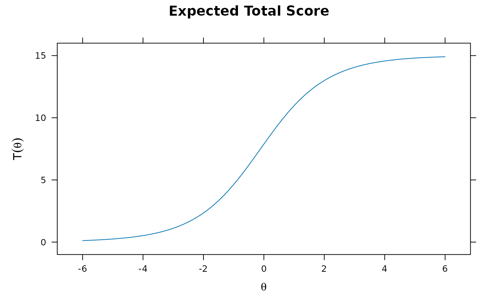

Extract a single group from an object defined by multipleGroup,
or as a mixture model from mirt.
References
Chalmers, R., P. (2012). mirt: A Multidimensional Item Response Theory Package for the R Environment. Journal of Statistical Software, 48(6), 1-29. doi:10.18637/jss.v048.i06
Author
Phil Chalmers rphilip.chalmers@gmail.com
Examples
# \donttest{
set.seed(12345)
a <- matrix(abs(rnorm(15,1,.3)), ncol=1)
d <- matrix(rnorm(15,0,.7),ncol=1)
itemtype <- rep('2PL', nrow(a))
N <- 1000
dataset1 <- simdata(a, d, N, itemtype)
dataset2 <- simdata(a, d, N, itemtype, mu = .1, sigma = matrix(1.5))
dat <- rbind(dataset1, dataset2)
group <- c(rep('D1', N), rep('D2', N))
models <- 'F1 = 1-15'
mod_configural <- multipleGroup(dat, models, group = group)
#>
Iteration: 1, Log-Lik: -18088.494, Max-Change: 0.37763
Iteration: 2, Log-Lik: -17943.205, Max-Change: 0.18868
Iteration: 3, Log-Lik: -17915.337, Max-Change: 0.10010
Iteration: 4, Log-Lik: -17907.752, Max-Change: 0.05644
Iteration: 5, Log-Lik: -17905.241, Max-Change: 0.03385
Iteration: 6, Log-Lik: -17904.329, Max-Change: 0.02073
Iteration: 7, Log-Lik: -17903.856, Max-Change: 0.00942
Iteration: 8, Log-Lik: -17903.798, Max-Change: 0.00531
Iteration: 9, Log-Lik: -17903.778, Max-Change: 0.00309
Iteration: 10, Log-Lik: -17903.767, Max-Change: 0.00141
Iteration: 11, Log-Lik: -17903.764, Max-Change: 0.00087
Iteration: 12, Log-Lik: -17903.764, Max-Change: 0.00041
Iteration: 13, Log-Lik: -17903.763, Max-Change: 0.00036
Iteration: 14, Log-Lik: -17903.763, Max-Change: 0.00018
Iteration: 15, Log-Lik: -17903.763, Max-Change: 0.00013
Iteration: 16, Log-Lik: -17903.763, Max-Change: 0.00009
group.1 <- extract.group(mod_configural, 'D1') #extract first group
summary(group.1)
#> F1 h2
#> Item_1 0.532 0.2835
#> Item_2 0.582 0.3383
#> Item_3 0.487 0.2371
#> Item_4 0.466 0.2176
#> Item_5 0.542 0.2935
#> Item_6 0.315 0.0992
#> Item_7 0.599 0.3592
#> Item_8 0.477 0.2280
#> Item_9 0.464 0.2148
#> Item_10 0.391 0.1529
#> Item_11 0.438 0.1923
#> Item_12 0.655 0.4291
#> Item_13 0.604 0.3650
#> Item_14 0.519 0.2699
#> Item_15 0.453 0.2048
#>
#> SS loadings: 3.885
#> Proportion Var: 0.259
#>
#> Factor correlations:
#>
#> F1
#> F1 1
plot(group.1)

# }